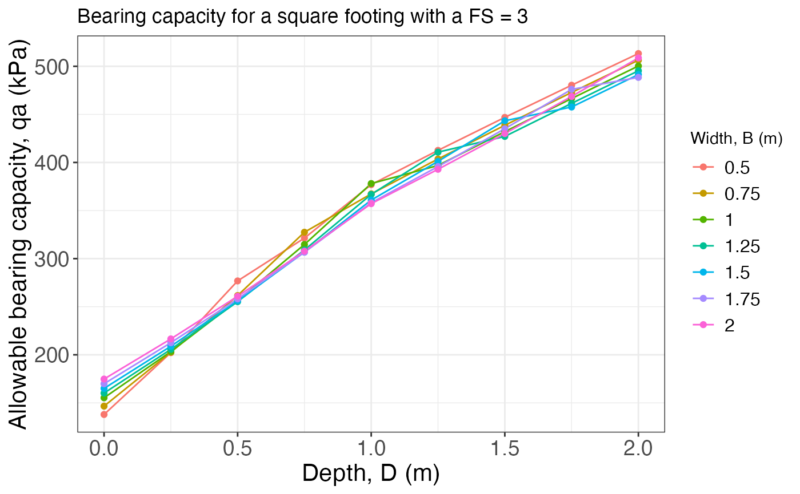
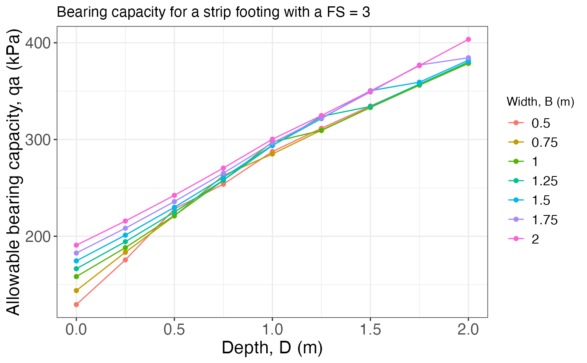
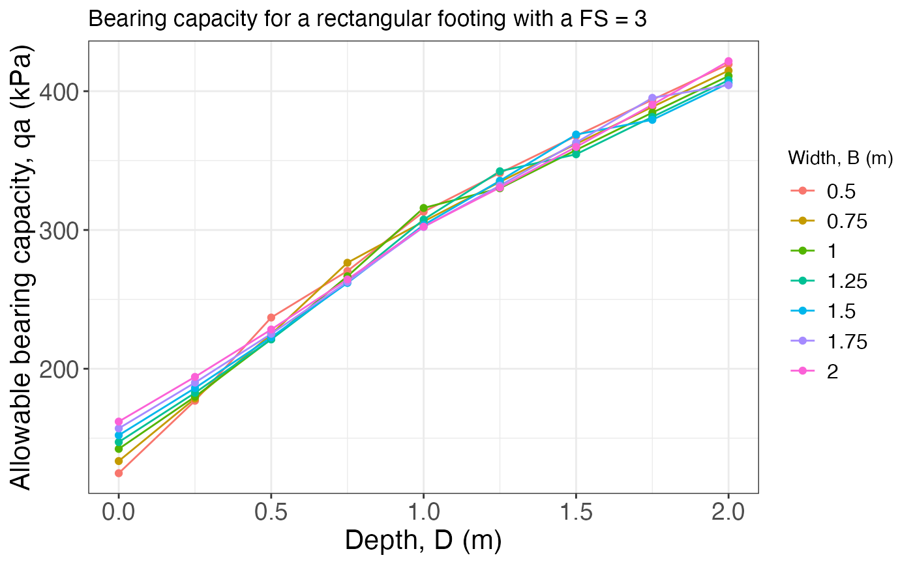

Calculates the ultimate and allowable bearing capacity of a shallow foundation using the general bearing capacity equation, and plots the relationship between depth and allowable bearing capacity for different footing widths and embedment depths.
Arguments
- B
The footing's width or diameter
- D
The footing's embedment depth
- Lf
Length factor for the footing
- gamma.h
The wet/moist unit weight of the soil
- gamma.s
The saturated unit weight of the soil
- tau0
The soil's cohesion (\(c, \tau_0\)) or undrained shear strength (\(s_u\))
- phi
The soil's friction angle (\(\phi\)) (in degrees)
- wl
The depth to the water level from the ground surface
- FS
The Factor of Safety to use for the calculation of \(q_a\)
- footing
Type of footing for which to calculate the bearing capacity: "square" (default), "strip", "rectangular", "circular"
- method
The method to use to calculate the bearing capacity factor \(N_\gamma\): "Vesic" (default), "Terzaghi", "Meyerhof", "Hansen", "Michalowski" or "Davis & Booker"
- case
The case to calculate the bearing capacity: "general" (default) or "local"
- metric
Logical. If
TRUE(default) the function will assume SI units (kN/m3 for unit weight, kPa for strength parameters, and meters for dimensions). IfFALSE, the function will assume imperial units (pcf for unit weight, psf for strength parameters, and feet for dimensions).
Value
A list with three elements: "qu" is a data frame with the calculated ultimate bearing capacity for each combination of B and D, "qa" is a data frame with the calculated allowable bearing capacity for each combination of B and D, and "Plot" is a ggplot object showing the relationship between D and qa for different values of B.
Details
The B and D parameters can be vectors for multiple cases comparisons or single values for a single case estimates. If FS = 1 then \(q_a = q_u\).
For a total stress analysis (TSA) in a cohesive soil (plastic silts and clays) set the friction angle equal to zero (\(\phi = 0\)) and the cohesion equal to the undrained shear strength (\(\tau_0 = s_u\)).
For an effective stress analysis (ESA) in a cohesive soil use the effective friction angle and effective cohesion.
For a coarse-grained soil (gravels, sands, and non-plastic silts) usually TSA = ESA, and the friction angle and cohesion should be used, and if the material has no-cohesion then set cohesion equal to zero (\(\tau_0 = 0\))
The general bearing capacity is calculated using the following equation:
$$q_u = \tau_0 N_c s_c d_c + \gamma D \left(N_q - 1\right) s_q d_q + 0.5 B * N_\gamma \gamma s_\gamma d_\gamma$$ Where: \(N_c\), \(N_q\), and \(N_\gamma\) are the bearing capacity factors, which are functions of the soil's friction angle (\(\phi\)) and the method used to calculate them, \(s_c\), \(s_q\), and \(s_\gamma\) are the shape factors, which depend on the footing type and dimensions, \(d_c\), \(d_q\), and \(d_\gamma\) are the depth factors, which depend on the footing's embedment depth and the water level, and \(\gamma\) is the unit weight of the soil, which can be either the wet/moist unit weight (\(\gamma_h\)) or the bouyant unit weight (\(\gamma_b = \gamma_s - 9.807\)), depending on the depth of the water level relative to the footing.
For a TSA, the equation simplifies to:
$$q_u = s_u N_c s_c d_c$$ Where: \(\tau_0 = s_u\) is the undrained shear strength of the soil, and \(N_c\) is 5.7 for "Terzaghi" and 5.14 for all the others.
For an ESA, the equation simplifies to:
$$q_u = \gamma D \left(N_q - 1\right) s_q d_q + 0.5 B * N_\gamma \gamma s_\gamma d_\gamma$$
The allowable bearing capacity (\(q_a\)) is then calculated by dividing the ultimate bearing capacity (\(q_u\)) by the Factor of Safety (\(FS\)):
$$q_a = \frac{q_u}{FS} + \gamma D$$
References
Budhu, M. (2011). Soil mechanics and foundations (3rd ed). Wiley.
Day, R. W. (2010). Foundation Engineering Handbook. McGraw Hill.
See also
Other soil mechanics:
Casagrande_LL(),
DS_plot(),
Mohr_Circle(),
compaction_test(),
fallcone_limits(),
induced_stress(),
insitu_stress(),
particle_size_graph()
Examples
B = seq(0.5, 2, 0.25)
D = seq(0, 2, 0.25)
Lf = 1
gamma.h = 15.5
gamma.s = 18.5
tau0 = 10
phi = 30
FS = 3
wl = 1
bearing_capacity(B, D, Lf, gamma.h, gamma.s, tau0, phi, wl, FS)
#> $qu
#> # A tibble: 9 × 8
#> `D/B` `0.5` `0.75` `1` `1.25` `1.5` `1.75` `2`
#> <dbl> <dbl> <dbl> <dbl> <dbl> <dbl> <dbl> <dbl>
#> 1 0 414. 440. 466. 480. 495. 510. 524.
#> 2 0.25 595. 596. 598. 605. 615. 626 638.
#> 3 0.5 807. 762. 746. 743. 745. 751. 759.
#> 4 0.75 929. 947. 909. 892. 886. 885. 888.
#> 5 1 1084. 1055. 1088. 1054. 1036. 1028. 1025
#> 6 1.25 1185. 1158. 1138. 1179. 1150. 1134. 1126.
#> 7 1.5 1281. 1256. 1237. 1222. 1271. 1246. 1231.
#> 8 1.75 1375. 1352. 1333. 1318. 1307. 1362. 1340.
#> 9 2 1467. 1446. 1428. 1413. 1402. 1393. 1453.
#>
#> $qa
#> # A tibble: 9 × 8
#> `D/B` `0.5` `0.75` `1` `1.25` `1.5` `1.75` `2`
#> <dbl> <dbl> <dbl> <dbl> <dbl> <dbl> <dbl> <dbl>
#> 1 0 138. 147. 155. 160. 165. 170. 175.
#> 2 0.25 202. 203. 203. 206. 209. 213. 217.
#> 3 0.5 277. 262. 256. 255. 256. 258. 261.
#> 4 0.75 321. 327. 315. 309. 307. 307. 308.
#> 5 1 377. 367. 378. 367. 361. 358. 357.
#> 6 1.25 413. 404. 397. 411. 401. 396. 393.
#> 7 1.5 447. 439. 432. 427. 443. 435. 430.
#> 8 1.75 480. 473. 466. 461. 458. 476. 469.
#> 9 2 513. 506. 500. 495. 491. 488. 509.
#>
#> $Plot

#>
bearing_capacity(B, D, Lf, gamma.h, gamma.s, tau0, phi, wl, FS, footing = "strip")
#> $qu
#> # A tibble: 9 × 8
#> `D/B` `0.5` `0.75` `1` `1.25` `1.5` `1.75` `2`
#> <dbl> <dbl> <dbl> <dbl> <dbl> <dbl> <dbl> <dbl>
#> 1 0 388. 432. 475. 499. 524. 548. 572.
#> 2 0.25 515. 539. 553. 571. 592. 613. 636.
#> 3 0.5 661. 640. 641. 651. 667. 684. 704.
#> 4 0.75 727. 754. 738. 739. 748. 761. 777.
#> 5 1 816. 809. 846. 835. 835. 843. 854.
#> 6 1.25 882. 876. 875. 919. 912. 914. 921.
#> 7 1.5 944. 940. 940. 943. 992. 988. 991.
#> 8 1.75 1005. 1002. 1003. 1006. 1012. 1065. 1063.
#> 9 2 1064. 1063. 1064. 1068. 1073. 1081. 1138.
#>
#> $qa
#> # A tibble: 9 × 8
#> `D/B` `0.5` `0.75` `1` `1.25` `1.5` `1.75` `2`
#> <dbl> <dbl> <dbl> <dbl> <dbl> <dbl> <dbl> <dbl>
#> 1 0 129. 144. 158. 166. 175. 183. 191.
#> 2 0.25 176. 183. 188. 194. 201. 208. 216.
#> 3 0.5 228. 221. 221. 225. 230. 236. 242.
#> 4 0.75 254. 263. 258. 258. 261. 265. 270.
#> 5 1 288. 285. 297. 294. 294. 296. 300.
#> 6 1.25 312. 310. 309. 324. 322. 322. 325.
#> 7 1.5 335. 333. 333. 334. 350. 349. 350.
#> 8 1.75 357. 356. 356. 357. 359. 377. 376.
#> 9 2 379. 379. 379. 380. 382. 384. 404.
#>
#> $Plot

#>
bearing_capacity(B, D, Lf = 3, gamma.h, gamma.s, tau0, phi, wl, FS,
footing = "rectangular", method = "Meyerhof")
#> $qu
#> # A tibble: 9 × 8
#> `D/B` `0.5` `0.75` `1` `1.25` `1.5` `1.75` `2`
#> <dbl> <dbl> <dbl> <dbl> <dbl> <dbl> <dbl> <dbl>
#> 1 0 374. 400. 427. 441. 456. 471. 486.
#> 2 0.25 519. 524. 528. 536. 547. 558. 571.
#> 3 0.5 687. 651. 641. 640. 645. 652. 662.
#> 4 0.75 776. 794. 765. 753. 751. 753. 758.
#> 5 1 893. 872. 901. 876. 864. 860. 861.
#> 6 1.25 970. 951. 937. 974. 953. 943. 939.
#> 7 1.5 1044. 1027. 1013. 1004. 1047. 1029. 1020
#> 8 1.75 1115. 1100. 1088. 1078. 1072. 1120. 1105.
#> 9 2 1186. 1172. 1160. 1151. 1145. 1141. 1192.
#>
#> $qa
#> # A tibble: 9 × 8
#> `D/B` `0.5` `0.75` `1` `1.25` `1.5` `1.75` `2`
#> <dbl> <dbl> <dbl> <dbl> <dbl> <dbl> <dbl> <dbl>
#> 1 0 125. 133. 142. 147. 152. 157. 162.
#> 2 0.25 177. 179. 180. 183. 186. 190. 194.
#> 3 0.5 237. 225. 221. 221. 223. 225. 228.
#> 4 0.75 270. 276. 267. 263. 262. 263. 264.
#> 5 1 313. 306. 316. 308. 304. 302. 302.
#> 6 1.25 341 335. 330. 342. 335. 332. 331.
#> 7 1.5 368. 362. 358. 355. 369. 363. 360.
#> 8 1.75 394. 389. 385. 381. 379. 395. 390.
#> 9 2 419. 415. 411. 408. 406. 404. 422.
#>
#> $Plot

#>